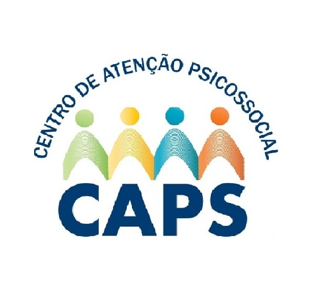
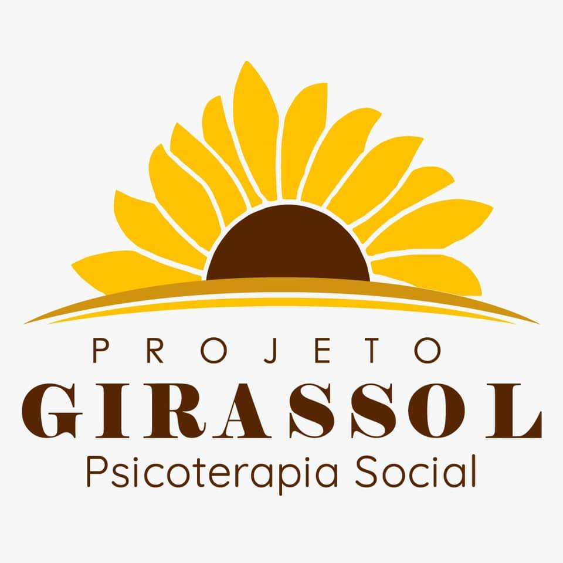
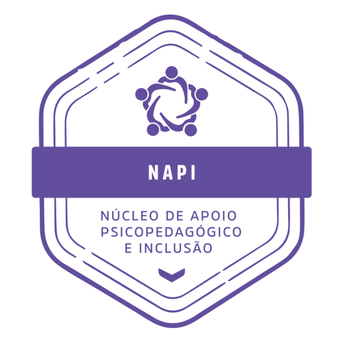
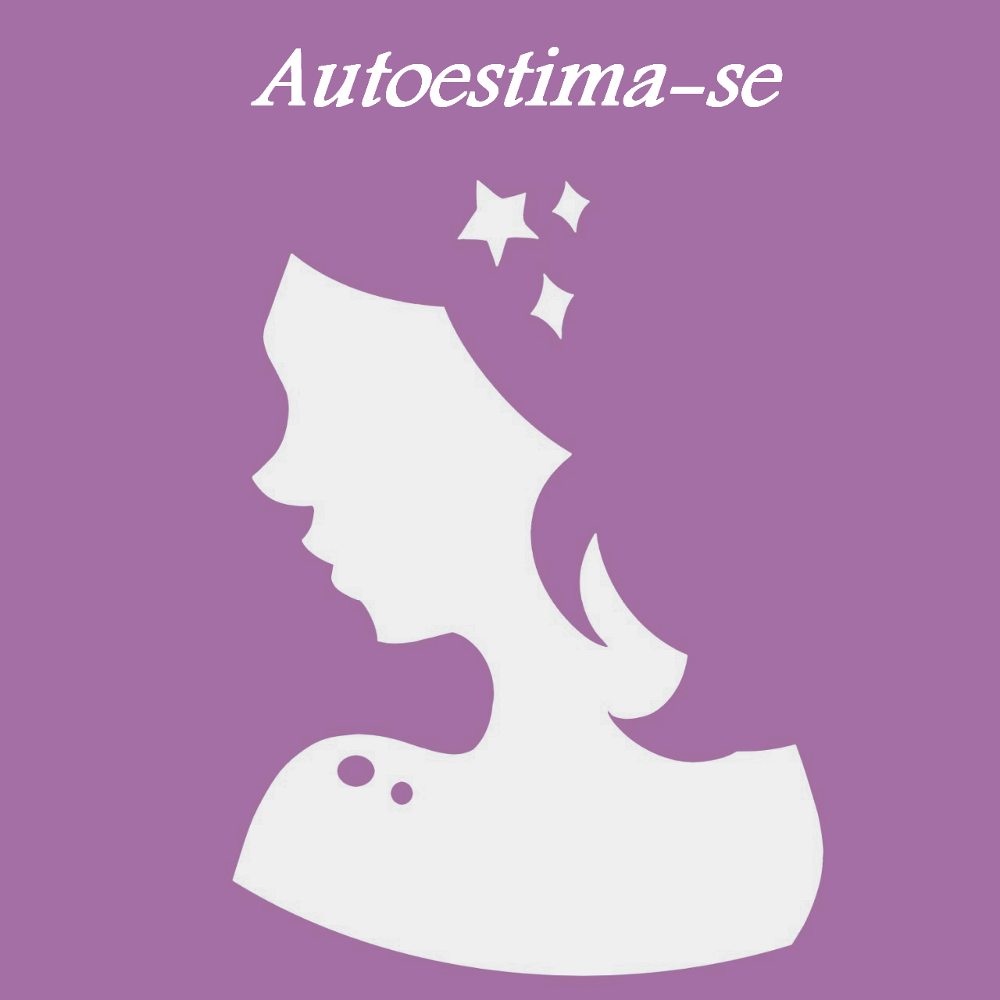
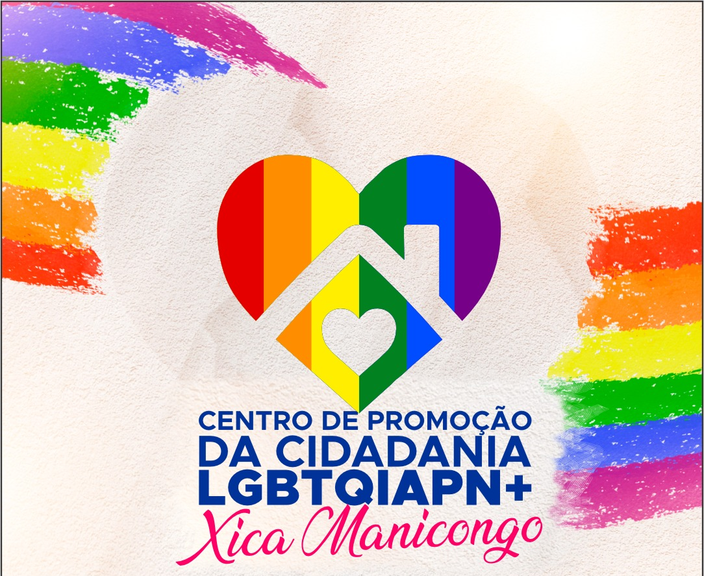
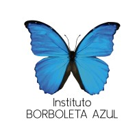

Escolha uma instituição
Use os filtros por público, tipo de atendimento e palavras-chave para encontrar opções.
Conectamos você a instituições que oferecem acolhimento, orientação e apoio emocional gratuito.
Pensamos cada etapa para que encontrar apoio seja simples, claro e sem barreiras.
Use os filtros por público, tipo de atendimento e palavras-chave para encontrar opções.
Veja descrição, horários, formas de contato e para quem cada instituição atende.
Fale diretamente por telefone, e-mail, WhatsApp ou redes sociais.
Inicie o atendimento gratuito e siga sendo apoiado por uma rede confiável.
Busque ou filtre pelos serviços que melhor atendem ao que você precisa agora.

PresencialCentros de Atenção Psicossocial que oferecem atendimento especializado em saúde mental.
Apoio emocional gratuito por telefone, chat e e-mail, 24 horas por dia.

PresencialAtendimento psicológico e oficinas terapêuticas para crianças e adolescentes.

PresencialApoio psicopedagógico e inclusão social para estudantes.
Atendimento psicoterapêutico para pessoas em situação de vulnerabilidade.

OnlineApoio emocional online para jovens e mulheres em todo o Brasil.

PresencialEspaço seguro de acolhimento, escuta qualificada e valorização da diversidade.

PresencialAtendimento psicológico gratuito para jovens e famílias em vulnerabilidade.
Informações claras e confiáveis para reconhecer sinais e saber quando buscar ajuda.
Entenda o que é, como reconhecer os sinais e estratégias iniciais de cuidado.
Ler artigo completo →Mais do que tristeza: a depressão é uma condição séria que merece cuidado.
Ler artigo completo →O esgotamento profissional e acadêmico afeta cada vez mais pessoas.
Ler artigo completo →Sinais de que é hora de buscar acompanhamento psicológico ou médico.
Ler artigo completo →O Inklu nasceu para conectar pessoas a instituições que oferecem acolhimento psicológico gratuito ou de baixo custo. Nosso objetivo é facilitar o acesso à informação e aproximar quem precisa de ajuda das redes de apoio existentes.
Facilitar o acesso ao cuidado emocional gratuito.
Aproximar pessoas das instituições disponíveis.
Tornar a saúde mental mais acessível para todos.
Informação confiável, acolhimento e inclusão.
Envie sugestões, dúvidas ou parcerias. Queremos ampliar nossa rede de acolhimento.
contato@inklu.com.br
Salvador • BA
Dúvidas comuns sobre atendimento psicológico gratuito, funcionamento da plataforma e instituições parceiras.